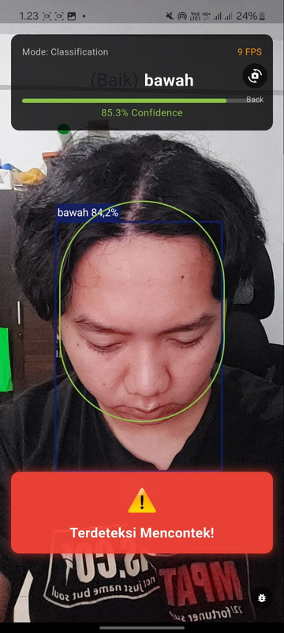
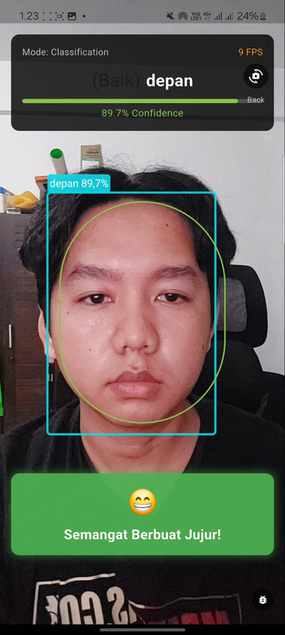
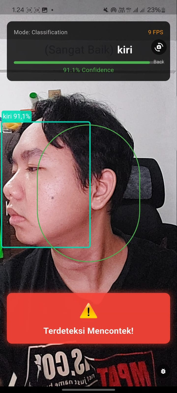
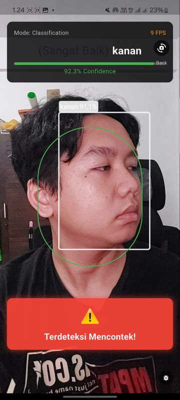
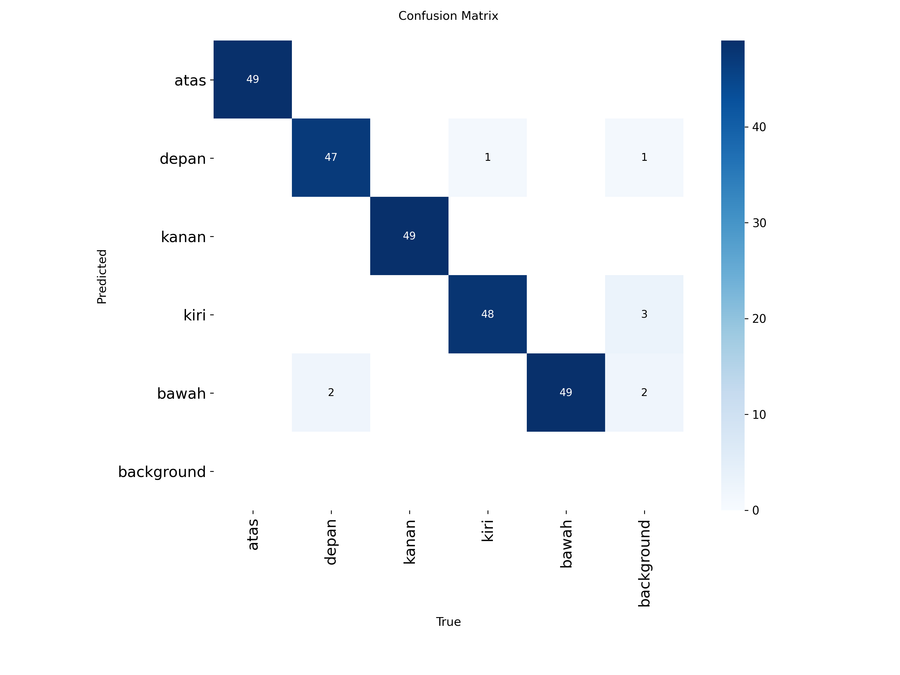

Project 01
CERDAS
Cheating Examination Recognition & Detection — YOLO-based
CERDAS spots exam cheating in real time by reading where someone's head and eyes are pointing. I built it from start to finish — collecting and labelling the data, training a YOLO model, then getting it to run smoothly on an Android phone with TensorFlow Lite and Flutter. It keeps up at around 9 FPS and shows a confidence score for each prediction.
CERDAS mendeteksi perilaku mencontek secara real-time dengan membaca arah kepala dan pandangan mata. Saya kerjakan dari awal sampai akhir — data, model YOLO, lalu deploy ke HP Android lewat TensorFlow Lite & Flutter, di kisaran 9 FPS.
- Real-time, on-device inference (~9 FPS)
- 6-class head & gaze orientation detection
- Full pipeline: data → training → Android deployment
- Python
- Ultralytics
- YOLO
- Anaconda
- Flutter
- Dart
- TensorFlow Lite
- Android
Documentation · Dokumentasi




